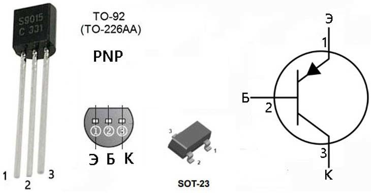
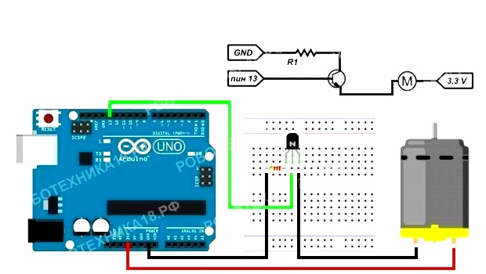

Ինչպես միացնել տրանզիստորը Arduino-ին
Տրանզիստոր են անվանում կիսահաղորդչային այն սարքը, որը նախատեսված է էլեկտրական տատանումների ուժեղացման և գեներացման համար։ Տրանզիստորները հանդիպում են բանալիներ։ Կրկնաբևեռ տրանզիստորները կարող են ղեկավարել էլեկտրական շղթան մինչև 50վ, իսկ դաշտային ռեզիստորները կարող են ղեկավարել մինչև 100վ ունեցող սարքեր։

Տրանզիստորի փակաղակի վրա լարման բացակայության դեպքում, թողարկող և կոլեկտորային անցումը գտնվում է
հավասարակշռության մեջ, հոսանքը դրանց միջով չի անցնում և հավասար է 0-ի։Այդպիսով, երկբևեռ տրանզիստորին
հաղորդելով 5վ, կարող ենք միացնել էլեկտրական շղթան մինչև 50վոլտ։ Այսօր նմանատիպ կիսահաղորդիչ առկա է գրեթե
բոլոր սարքավորումներով (հեռաղոս, համակարգիչ և այլն)։
Տրանզիստորները միկրոսխեմաները հիմնական տարրերից են։ Տրանզիստորը էլեկտրական էլեմենտ է կիսահաղորդչային
նյութից կազմված, սովորաբար այն ունի 3 ելք, որը թույլ է տալիս մուտքային ազդանշանի միջոցով ղեկավարել բարձր
լարմամբ հոսանքը։
Անհրաժեշտ էլեմենտներ
- Arduino Uno/ Arduino Nano/ Arduino Mega2560
- breadboard
- 1 Կրկնաբևեռ
- 1 շարժիչ
- 2 ռեզիստոր
- լարեր՝ «պապա-պապա» և «պապա-մամա»
Հնարավոր չի շարժիչը միացնել Arduino-ին թվային կամ անալոգային պիներին և աշխատացնել։ Դա պայմանավորված է այն հանգամանքով, որ Arduino-ի պիները 40օմԱ ավելի մեծ արժեք չեն կարող հաղորդել։ Այդիսկ պատճառով էլեկտրական շղթան ղեկավարելու համար անհրաժեշտ է բարձր լարմամբ տրանզիստոր կամ Motor Shield L293D:

Եթե կոդը ուսումնասիրենք, ապա կտեսնենք, որ նույն կերպ է միացվում լեդ լույսը Arduino-ին։ Միկրոպրոցեսորի
համար էական չի թե ինչ է միացված pin13-ին՝ լեդ, տրանզիստոր։
Ուշադրություն դարձրեք այն հանգամանքի վրա, որ Ռ1 ռեզիստորը միանում է -ին, իսկ Ռ2-ը պաշտպանում է
միկրոկոնտրոլերը գերլարումից։ Շարժիչը Arduino-ին միացնելու մեկ այլ տարբերակ։ Միացումներին ավելացնում ենք
ֆոտոռեզիստոր և կոդը ձևափոխում այնպես, որ սենյակի լուսավորությունից կկախված միացնելու շարժիչը։ Կարելի է
կիրառել նաև ջրի սենսորըկամ որևէ այլ սենսոր։
#define sensor A0
unsigned int value = 0;
void setup() {
pinMode(11, OUTPUT);
}
void loop() {
value = analogRead,(sensor);
if (value<500) digitalWrite(9,HIGH);
if (value>500) digitalWrite(9, LOW);
}
Կոդի մեկնաբանություն
- Առաջին տողում A0-ին միացված պինին sensor անունով ենք հայտարարել։
- unsigned int տվյալի տիպը ցույց է տալիս, որ value-ի արժեքը միայն դրական թիվ կարող է լինել, որի սկզբնական արժեքը 0 է։
- if պայմանի օպերատորը թույլ է տալիս սահմանել գործողության պայմանը բավարարելու դեպքում, իսկ else-ը բլոկը կկատարվի պայմանը չբավարարելու դեպքում։